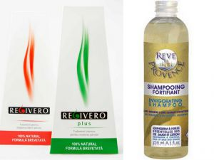
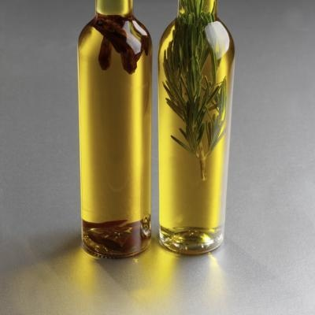

Sfaturi de creștere a părului pe care trebuie neapărat să le ști
 Meniu Contul meu Click for more products. No produts were found. 0 Cos Mulţumit 100% sau primeşti toţi banii înapoi! (detalii) Contul meu Ajutor Metode de plata si livrare Intrebari frecvente Contacteaza-ne Inchide
Conectare rapidă:
Facebook Google Sauperm_identity
Sign In Inchide
Login rapid cu:
Facebook Google Sau Produse Nanofibrele Toppik Accesorii Toppik Îngrijirea părului Mascarea rădăcinilor păr vopsit PROMOTII - Oferte curente Cum functioneaza Rezultate Foto Video De la clienti Garantia 100% PROMOTII Click for more products. No produts were found. 0 produs(e) - 0,00 RON Nu ai adaugat inca nimic in cos. Acasa Blog Sfaturi de crestere a parului pe care trebuie neaparat sa le stii Blog archives 2021 June April March February 2020 November October April 2019 December October September August April March February January 2018 December November October September March 2017 September Blog categories Ultimele articole Latest CommentsAlexandra Pricop
on De ce ne cade mai mult par toamna? Blog search Tags caderea parului volum cresterea parului balsamSfaturi de crestere a parului pe care trebuie neaparat sa le stii
Dacă ești determinată să crești un păr de Rapunzel, ai ajuns la locul potrivit. Chiar dacă nu ai reușit niciodată să îți crești părul la dimensiunea dorită, acest articol îți va arata calea către un păr lung și sănătos; urmând aceste sfaturi de creștere a părului, rămânând consecventă și răbdătoare, vei ajunge la lungimea dorită!Sfaturi de creștere a părului pe care trebuie neapărat să le știi
Dacă ești determinată să crești un păr de Rapunzel, ai ajuns la locul potrivit. Chiar dacă nu ai reușit niciodată să îți crești părul la dimensiunea dorită, acest articol îți va arata calea către un păr lung și sănătos; urmând aceste sfaturi de creștere a părului, rămânând consecventă și răbdătoare, vei ajunge la lungimea dorită!
.
Ce ajută părul să crească?
Vă recomandăm o abordare în două direcții a creșterii părului:
În primul rând, vă recomandăm să urmați o rutină delicată de îngrijire a părului (descrisă mai jos). Tratați-vă părul ca și cum ar fi făcut din aur și vă va răsplăti stând sănătos. Trucul pentru a crește părul lung este să-l păstrați cât mai sănătos pentru a preveni ruperea și despicarea vârfurilor. Cu cât mai puțin se despică firele, cu atât mai lung crește părul.
În al doilea rând, asigurați-vă aportul optim de substanțele nutritive pentru a susține creșterea sănătoasă a părului. Puteți obține toate aceste substanțe nutritive prin abordarea unei diete bogate în proteine, plante și fructe. Sau administrați un supliment de creștere a părului ca Viviscal ™.
.
Îngrijirea părului lung: Sfaturi de creștere a părului
Urmăriți în mod consecvent aceste sfaturi pentru a ajuta la optimizarea creșterii părului prin limitarea ruperii:
Tăiați vârfurile în mod regulat pentru a menține părul sănătos și pentru a minimiza ruperea pe măsură ce crește. Atunci când sunt lăsate netăiate, vârfurile despicate se pot întinde pe lungimea firului, provocând ruperea firului. Șamponarea părului de două până la trei ori pe săptămână, folosind un sampon delicat, precum șamponul Toppik. Spălarea părului prea mult poate elimina uleiurile sale naturale de hidratare, care îi păstrează aspectul strălucitor și sănătos. În timp ce vă spălați părul, masați scalpul cu vârfurile degetelor pentru a crește circulația foliculilor de păr, ceea ce va aduce mai mult oxigen și substanțe nutritive către foliculi prin intermediul fluxului sanguin. După spălare, aplicați un balsam pentru a pentru a hidrata vârfurile. Balsamurile îmbunătățesc, de asemenea, rezistența părului prin etanșarea cuticulei, împiedicând astfel uscarea firelor. Dacă lungimea părului trece de umeri, acel păr are cel puțin un an și necesită o atenție deosebită pentru a preveni ruperea. Tratați părul săptămânal, cu o mască hidratantă sau cu un tratament cu ulei fierbinte. Aplicați masca pe părul umed, lăsați-l să stea cel puțin 20 de minute (deși este preferat peste noapte), apoi șamponați și aplicați balsam normal. Fiți foarte atenti atunci cand pieptănati sau periati părul. Întotdeauna începeți de la rădăcini și treceți încet către vârfuri. Utilizați un pieptene cu dinți rari pe părul umed, sau mai bine, evitați pieptănatul, deoarece este mult mai fragil decât părul uscat. Îmbrățișează textura naturală a părului, permițând părului să se usuce în mod natural și sărind peste placă sau ondulator. Purtați părul împletit pentru a preveni încurcarea și ruperea. În timp ce așteptați creșterea părului, utilizați nanofibrele Toppik pentru a ascunde părul rar și a obține un efect instant de păr desCei mai buni nutrienți care provoacă creșterea părului
Pentru o creștere optimă, asigurați-vă că consumați în mod regulat toate aceste substanțe nutritive pentru păr, ca parte a unei alimentații sănătoase. Sau obțineți substanțele nutritive potrivite pentru a susține creșterea părului într-un supliment complet, cum ar fi suplimentul de creștere a părului Viviscal ™ *. *
- Biotina
Vitamina B7, cunoscută și sub numele de vitamina H, biotina ajută la metabolizarea carbohidraților și a proteinelor care alcătuiesc structura firului de păr. Biotina este atât de importantă pentru creșterea părului, încât, deficiențele de biotină sunt principal cauză de pierdere a părului.
* Migdalele, ouăle și somonul sunt toate surse naturale excelente de biotină.
- Fier
Fierul ajută la formarea celulelor roșii din sânge, care furnizează oxigen și substanțe nutritive foliculilor de păr și ajută la creșterea părului. Ca si biotina, o deficienta in fier poate provoca caderea parului. * Sursele alimentare de fier includ carne rosie, spanac, linte, fasole si oua.
- Vitamina C
Vitamina C este un antioxidant puternic care protejează împotriva radicalilor liberi care dăunează foliculilor. În plus, vitamina C ajută la producerea de colagen, o proteină vitală pentru structura firului de păr. Vitamina C ajută organismul să absoarbă fierul.
* Citricele, ardeii și căpșunile sunt surse naturale și delicioase de vitamina C.
- Dioxid de siliciu
Un scalp excesiv de acid duce la deteriorarea si ruperea foliculilor de păr. Silica minerală ajută la echilibrarea pH-ului scalpului și împiedică acidificarea. Sursele naturale de silice includ verdele frunzelor, boabele integrale, ceapa și apa minerală.
- Niacina
De asemenea, cunoscut sub numele de vitamina B3, niacina îmbunătățește circulația, ajutând la aducerea mai multor substanțe nutritive la foliculii de păr.
* Niacina se găsește în ciuperci, ouă, ton și carne de vită.
- Zinc
Zincul reglează glandele sebacee, care sunt necesare pentru a menține scalpul și părul sănătoase și hidratate. Zincul este atât de important pentru sănătatea părului încât deficiențele de zinc pot determina pierderea părului.
* Sursele sănătoase de zinc includ semințele de dovleac, lămâia, spanacul, carnea de vită și stridiile.
Amintiți-vă: creșterea părului necesită timp. Potrivit The American Journal of Dermatology, părul creste cu o rată medie de 1-2 cm pe lună. Fiți răbdători și în concordanță cu aportul de vitamine și urmați această rutină de îngrijire a părului și veți vedea rezultate in cateva luni.
Related products Alege culoarea
Toppik Fibers (12g)
135,00 RON ( 4,9 / 5 ) din 138 comentarii Nanofibrele Toppik maschează rapid şi eficient părul rar şi subţire. Alcătuite din cheratină naturală, asemănătoare ca textură şi aspect cu firul de păr uman, după aplicare acestea sunt imposibil de detectat, chiar şi Alege culoarea Alege culoarea Limited special offerPachet: 2xToppik Fibers 55g + CADOU: Toppik Fibers 12g
670,00 RON 805,00 RON -135,00 RON ( 5 / 5 ) din 3 comentarii Nanofibrele Toppik maschează rapid şi eficient părul rar şi subţire. Alcătuite din cheratină naturală, asemănătoare ca textură şi aspect cu firul de păr uman, după aplicare acestea sunt imposibil de detectat, chiar şi Alege culoarea Alege culoarea Limited special offerPachet: 3xToppik Fibers 12g
330,00 RON 405,00 RON -75,00 RON ( 5 / 5 ) din 1 comentarii Pachetul conţine 3 flacoane Toppik Fibers 12g, la un preţ promoţional! Dacă eşti un client fidel, acest pachet te va ajuta să economiseşti 75 lei, preţul fiind 330 lei în loc de 405 lei. Fiecare flacon Toppik Fibers Alege culoarea Adauga in cosŞampon densificator Toppik (250ml)
75,00 RON ( 5 / 5 ) din 5 comentarii Şamponul Toppik curăţă şi hrăneşte firul de păr în profunzime, cu efect sporit de volum. Un singur şampon, fără parabeni sau sulfaţi, pentru toate problemele părului tău. Adauga in cos Previous article Next article Leave a Comment Leave a Reply Please login to post a comment. CONTACTEAZĂ-NESC BLACKNET ONLINE SRL
Str. Grigore Alexandrescu Nr.55/28;
Loc. Cluj-Napoca; Judetul Cluj;
0757.640.318 (Lu-Vi 9:00-16:00)
contact@toppik.ro
MAGAZIN Misiunea noastră Formular de contact Termeni si conditii Politica de cookies ANPC INFORMATII CLIENTI Metode de plata si livrare Intrebari frecvente Garanțiile și beneficiile oferite Politica de reduceri Politica de retur DEVINO CLIENT VIPVei avea acces la oferte exclusive, lansari de produse si multe alte surprize placute.
NE GASESTI SI PECosul tau de cumparaturi
Nu ai adaugat inca nimic in cos.Meniu
Produse Nanofibrele Toppik Accesorii Toppik Îngrijirea părului Mascarea rădăcinilor păr vopsit PROMOTII - Oferte curente Cum functioneaza Rezultate Foto Video De la clienti Garantia 100% PROMOTII Blog CONTUL MEUSettings
Contul meu Click for more products. No produts were found.Recently Viewed
No productsPlacut
Creați un cont gratuit pentru a salva produsele și articolele placute.
Sign inPlease sign in first.
Sign in